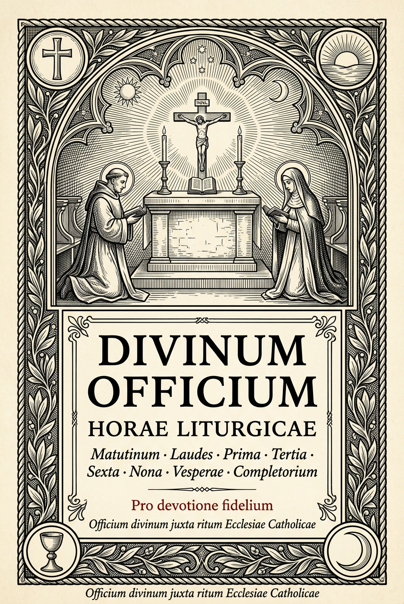

Horae Liturgicae — Breviarium Romanum ante reformationem 1962
✠ ✠ ✠
Horae Liturgicae
Octo horae canonicae secundum usum Romanum ante reformationem A.D. MCMLXII
Illustrationes, preces, hymni — ad maiorem Dei gloriam

Divinum Officium — tabula horarum ad usum devotionis quotidianae.
Septies in die laudem dixi tibi, super iudicia iustitiae tuae.
— Ps. CXVIII:164
✦ Officium Nocturnum ✦
I
Matutinum
Matins — the Night Office
Vigilia nocturna cum invitatorio et tribus nocturnis lectionum.
in nocte
II
Laudes
Lauds — Morning Praise
Laus matutina resurgentis diei, cum Benedictus et canticis laudis.
mane
✦ Horae Minores ✦
III
Prima
Prime — the First Hour
Oratio prima diei post galli cantum, initium operis consecrans.
circa 06:00
IV
Tertia
Terce — the Third Hour
Hora Spiritui Sancto dicata, media inter mane et meridiem.
circa 09:00
V
Sexta
Sext — the Sixth Hour
Hora crucis, in medio diei, cum psalmis poenitentialibus.
circa 12:00
VI
Nona
None — the Ninth Hour
Hora redemtionis, ante vesperas, in declinatione diei.
circa 15:00
✦ Officium Vespertinum ✦
VII
Vesperae
Vespers — the Evening Office
Gratiarum actio vespertina, cum psalmis, hymno et Magnificat.
vespere
VIII
Completorium
Compline — the Night Prayers
Ultimum officium ante quietem noctis, sub tutela Dei et angelorum.
ante quietem
✦ Corona Beatæ Mariæ Virginis ✦
R
Rosarium
Rosary — Mysteries and Decades
Corona Marianorum precum, contemplatio mysteriorum vitae Christi et Mariae.
ad libitum